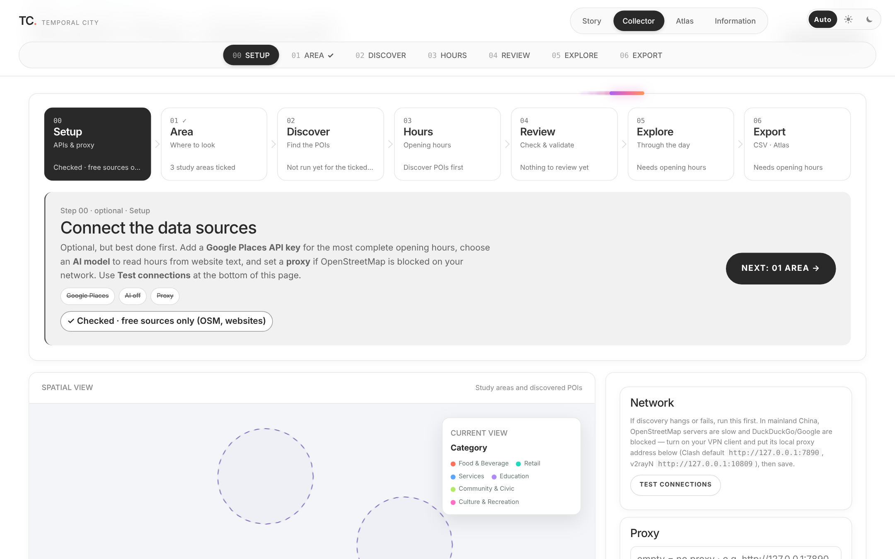
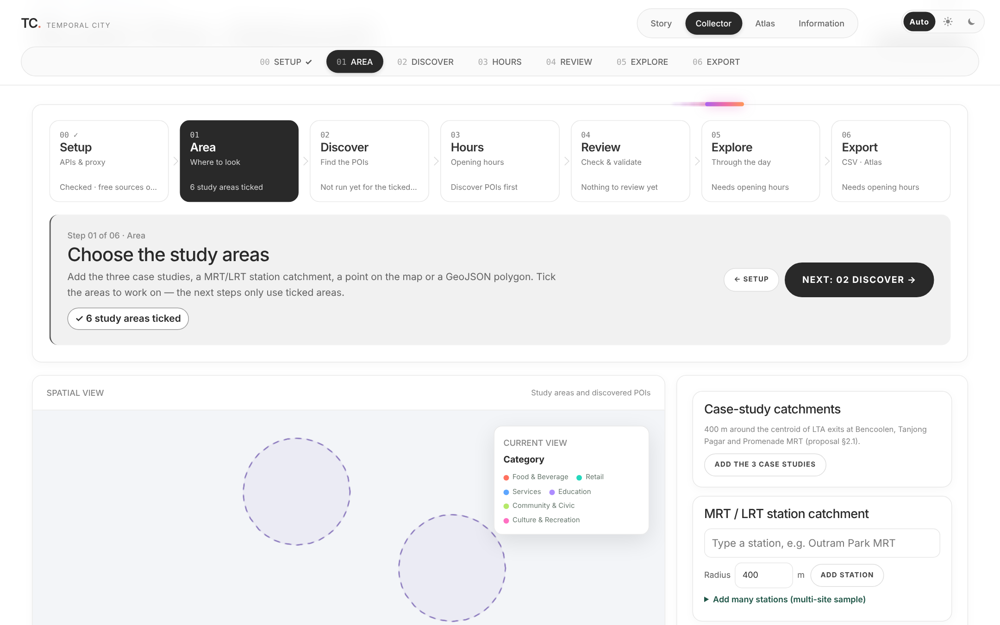
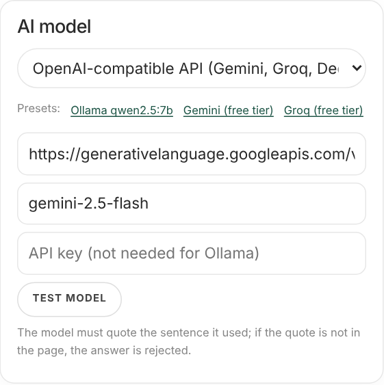

Connect the data sources
Optional, best done first. Add a Google Places API key for the most complete opening hours, choose an AI model (Ollama, Gemini, Groq, DeepSeek, OpenAI or Claude) to read hours from website text, and set a proxy if OpenStreetMap is blocked. Test connections checks each one.

Choose the study areas
Add the three case studies, an MRT/LRT station catchment, a point on the map or a GeoJSON polygon. Only ticked areas are used in the next steps.

Find every amenity
Queries OpenStreetMap for all amenities, shops and services inside the ticked areas, drops benches, parking and similar, and sorts the rest into six categories.
Get the opening hours
Tries the OSM tag, then Google Places (if a key is set), then business websites. A website is read first from its structured data, then by rules; where the hours are only written as sentences, the AI model turns the text into a 7 × 24 weekly schedule and must quote the sentence it used. The quote is checked against the page, or the result is rejected. Places still missing can be filled by hand from Google.

Check the evidence
Every record shows all its sources, the exact evidence text and the link. Two sources agreeing on ≥ 90% of the 168 weekly hours makes a record verified; disagreement is flagged as a conflict for a person to resolve. Validate accuracy draws a random sample to check by hand.
See availability through the day
Drag the hour to see which places are open on the map; the chart shows the share open in every hour.
Use the result
Download CSV / GeoJSON for QGIS or the report, or open the ticked areas in the Atlas for maps, GFA and the comparison.
The Collector runs on your own computer.
It needs a small Python server, because it calls OpenStreetMap, Google Places, websites and the AI model and keeps the results in a local database. GitHub Pages can only host static pages, so this public site shows the Story, the Atlas (Google Places sample for the three case areas) and the Information page, and explains the Collector here.
py app.py → open http://127.0.0.1:8765
Full instructions are in the README of the project repository. API keys are entered by each user in Setup and are never stored in the repository.